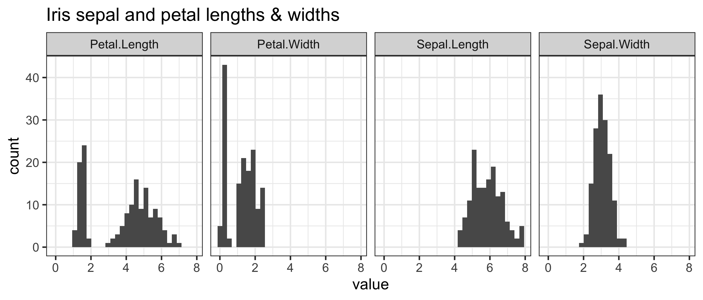
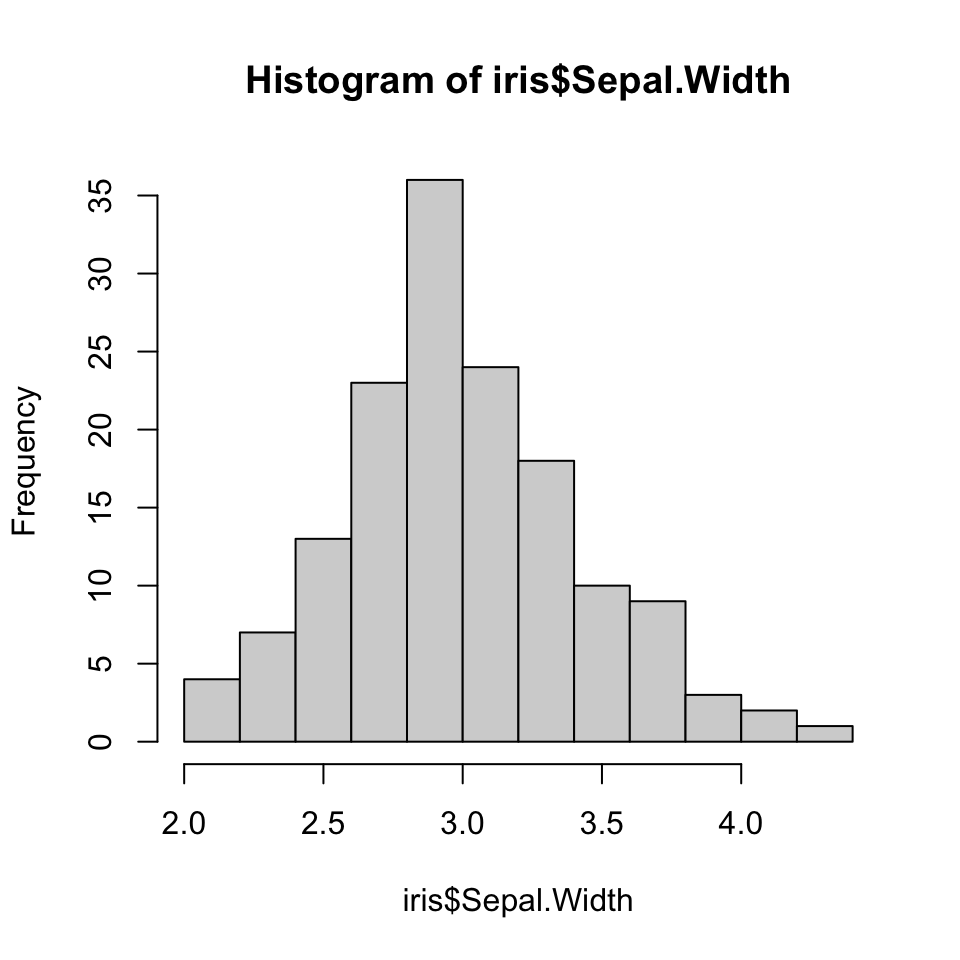

y <- 5
yLesson 2: Data collection & numerical summaries
Week 1
Goals for today
- (1.3) Data collection principles
- Population vs. sample
- Sampling methods
- Experiments vs. Observational studies
- (1.2) Intro to Data
- Data types
- How are data stored in R?
- Working with data in R
- (1.4) Summarizing numerical data
- Mean, median, mode, SD, IQR, range, 5 number summary
- Empirical Rule
- robust statistics
- R packages -> install for next class!!!
Recap of last time
- Creating and rendering Quarto files

- Formatting text & headers
- Code chunks
Useful keyboard shortcuts
Full list of keyboard shortcuts
| action | mac | windows/linux |
|---|---|---|
| Run code in qmd (or script) | cmd + enter | ctrl + enter |
<- |
option + - | alt + - |
| interrupt currently running command | esc | esc |
| in console, retrieve previously run code | up/down | up/down |
| keyboard shortcut help | option + shift + k | alt + shift + k |
Practice
Try typing code below in your qmd (with shortcut) and evaluating it:
Another resource for an introduction to R
If you would like another perspective on what we covered the first week, you might find Danielle Navarro’s online book Learning Statistics with R to be helpful.
Download free pdf: https://learningstatisticswithr.com/
See Sections 3.1-3.7.1 for some of the topics we covered on first day
MoRitz’s tip of the day
Customize your RStudio interface!
https://www.pipinghotdata.com/posts/2020-09-07-introducing-the-rstudio-ide-and-r-markdown/#background


(1.3) Data collection principles
- Population vs. sample
- Sampling methods
- Experiments vs. Observational studies
Population vs. sample
(Target) Population
- group of interest being studied
- group from which the sample is selected
- studies often have inclusion and/or exclusion criteria
Sample
- group on which data are collected
- often a small subset of the population
Sampling methods (1/4)
Goal is to get a representative sample of the population:
the characteristics of the sample are similar to the characteristics of the population
Simple random sample (SRS)
- each individual of a population has the same chance of being sampled
- randomly sampled
- considered best way to sample

Convenience sample
- easily accessible individuals are more likely to be included in the sample than other individuals
- a common “pitfall”

Sampling methods (2/4)
Good sampling plans don’t guarantee samples representative of the population
Non-response bias
- non-response rates can be high
- are all groups within a population being reached?
- unrepresentative sample
=> skewed results

“Random” samples can be unrepresentative by random chance
- In a SRS each case in the population has an equal chance of being included in the sample
- But by random chance alone a random sample might contain a higher proportion of one group over another
- Ex: a SRS might by chance include 70% men (unlikely, but theoretically possible)
Sampling methods (3/4)
- Simple random sample (SRS)
- each individual of a population has the same chance of being sampled
- statistical methods taught in this class assume a SRS!
- Stratified sampling
- divide population into groups (strata) before selecting cases within each stratum (often via SRS)
- usually cases within a strata are similar, but are different from other strata with respect to the outcome of interest, such as gender or age groups

Sampling methods (4/4)
- Cluster sample
- first divide population into groups (clusters)
- then sample a fixed number of clusters, and include all observations from chosen clusters
- clusters are often hospitals, clinicians, schools, etc., where each cluster will have similar services/ policies/ etc.
- cases within clusters usually very diverse
- Multistage sample
- similar to a cluster sample, but select a random sample within each selected cluster instead of all individuals

Experiments (1/2)
- Researchers assign individuals to different treatment or intervention groups
- control group: often receive a placebo or usual care
- different treatment groups are often called study arms
- Randomization
- group assignment is usually random to ensure similar (balanced) study arms for all variables (observed and unobserved)
- randomization allows study arm differences in outcomes to be attributed to treatment rather than variability in patient characteristics
- treatment is the only systematic difference between groups
- establish causality
- blocking (stratification): group individuals into blocks (strata) before randomizing if there are certain characteristics that may influence the outcome other than treatment (i.e. gender, age group)
Experiments (2/2)
- Replication
- accomplished by collecting a sufficiently large sample
- results usually more reliable with a large sample size
- often less variability
- more likely to be representative of population
- Some studies are not ethical to carry out as experiments
Observational studies
- data are observed and recorded without interference
- often done via surveys, electronic health records, or medical chart reviews
- cohorts
- associations between variables can be established, but not causality
- Individuals with different characteristics may also differ in other ways that influence response
- confounding variables (lurking variable)
- variables associated with both the explanatory and response variables
- prospective vs. retrospective studies
Comparing study designs

Systematic Reviews example

STEM is a collaborative project between the US Department of Veterans Affairs and the Center for Evidence-based Policy at Oregon Health & Science University.
The project is funded by the US Department of Veterans Affairs: Office of Rural Health.

(1.2) Intro to Data

How are data stored, how do we use them?
- Often, data are in an Excel sheet, or a plain text file (.csv, .txt)
- .csv files open in Excel automatically, but actually are plain text
- Usually, columns are variables/measures and rows are observations (i.e. a person’s measurements)
Data in R
- We can import data from many file types, including .csv, .txt., and .xlsx
- We will cover this on a later date
- Once imported, R typically stores data as data frames, or tibbles if using the
tidyversepackage (more on this later).- For our purposes, these are essentially the same, and I will tend to use the terms interchangeably.
- These are examples of what we call object types in R.
Data frame example
df <- data.frame(
IDs=1:3,
gender=c("male", "female", "Male"),
age=c(28, 35.5, 31),
trt = c("control", "1", "1"),
Veteran = c(FALSE, TRUE, TRUE)
)
df IDs gender age trt Veteran
1 1 male 28.0 control FALSE
2 2 female 35.5 1 TRUE
3 3 Male 31.0 1 TRUE- Vectors vs. data frames
- a data frame is a collection (or array or table) of vectors
Different columns can be of different data types (i.e. numeric vs. text)
Both numeric and text can be stored within a column (stored together as text).
Vectors and data frames are examples of objects in R.
- There are other types of R objects to store data, such as matrices, lists.
Observations & variables
df IDs gender age trt Veteran
1 1 male 28.0 control FALSE
2 2 female 35.5 1 TRUE
3 3 Male 31.0 1 TRUE
Book refers to a dataset as a data matrix
Rows are usually observations
Columns are usually variables
How many observations are in this dataset?
What are the variable types in this dataset?
Variable (column) types
| R type | variable type | description |
|---|---|---|
| integer | discrete | integer-valued numbers |
| double or numeric | continuous | numbers that are decimals |
| factor | categorical | categorical variables stored with levels (groups) |
| character | categorical | text, “strings” |
| logical | categorical | boolean (TRUE, FALSE) |
- View the structure of our data frame to see what the variable types are:
str(df)'data.frame': 3 obs. of 5 variables:
$ IDs : int 1 2 3
$ gender : chr "male" "female" "Male"
$ age : num 28 35.5 31
$ trt : chr "control" "1" "1"
$ Veteran: logi FALSE TRUE TRUEFisher’s (or Anderson’s) Iris data set
Data description:
- n = 150
- 3 species of Iris flowers (Setosa, Virginica, and Versicolour)
- 50 measurements of each type of Iris
- variables:
- sepal length, sepal width, petal length, petal width, and species
Can the iris species be determined by these variables?


View the iris dataset
- The
irisdataset is already pre-loaded in base R and ready to use. - Type the following command in the console window
- Warning: this command cannot be rendered. It will give an error.
View(iris)A new tab in the scripting window should appear with the iris dataset.

Data structure
- What are the different variable types in this data set?
str(iris) # structure of data'data.frame': 150 obs. of 5 variables:
$ Sepal.Length: num 5.1 4.9 4.7 4.6 5 5.4 4.6 5 4.4 4.9 ...
$ Sepal.Width : num 3.5 3 3.2 3.1 3.6 3.9 3.4 3.4 2.9 3.1 ...
$ Petal.Length: num 1.4 1.4 1.3 1.5 1.4 1.7 1.4 1.5 1.4 1.5 ...
$ Petal.Width : num 0.2 0.2 0.2 0.2 0.2 0.4 0.3 0.2 0.2 0.1 ...
$ Species : Factor w/ 3 levels "setosa","versicolor",..: 1 1 1 1 1 1 1 1 1 1 ...Data set summary
summary(iris) Sepal.Length Sepal.Width Petal.Length Petal.Width
Min. :4.300 Min. :2.000 Min. :1.000 Min. :0.100
1st Qu.:5.100 1st Qu.:2.800 1st Qu.:1.600 1st Qu.:0.300
Median :5.800 Median :3.000 Median :4.350 Median :1.300
Mean :5.843 Mean :3.057 Mean :3.758 Mean :1.199
3rd Qu.:6.400 3rd Qu.:3.300 3rd Qu.:5.100 3rd Qu.:1.800
Max. :7.900 Max. :4.400 Max. :6.900 Max. :2.500
Species
setosa :50
versicolor:50
virginica :50
Data set info
dim(iris)[1] 150 5nrow(iris)[1] 150ncol(iris)[1] 5names(iris)[1] "Sepal.Length" "Sepal.Width" "Petal.Length" "Petal.Width" "Species" View the beginning or end of a dataset
head(iris) Sepal.Length Sepal.Width Petal.Length Petal.Width Species
1 5.1 3.5 1.4 0.2 setosa
2 4.9 3.0 1.4 0.2 setosa
3 4.7 3.2 1.3 0.2 setosa
4 4.6 3.1 1.5 0.2 setosa
5 5.0 3.6 1.4 0.2 setosa
6 5.4 3.9 1.7 0.4 setosatail(iris) Sepal.Length Sepal.Width Petal.Length Petal.Width Species
145 6.7 3.3 5.7 2.5 virginica
146 6.7 3.0 5.2 2.3 virginica
147 6.3 2.5 5.0 1.9 virginica
148 6.5 3.0 5.2 2.0 virginica
149 6.2 3.4 5.4 2.3 virginica
150 5.9 3.0 5.1 1.8 virginicaSpecify how many rows to view at beginning or end of a dataset
head(iris, 3) Sepal.Length Sepal.Width Petal.Length Petal.Width Species
1 5.1 3.5 1.4 0.2 setosa
2 4.9 3.0 1.4 0.2 setosa
3 4.7 3.2 1.3 0.2 setosatail(iris, 2) Sepal.Length Sepal.Width Petal.Length Petal.Width Species
149 6.2 3.4 5.4 2.3 virginica
150 5.9 3.0 5.1 1.8 virginicaThe $
- Suppose we want to single out the column of petal width values.
- One way to do this is to use the
$DatSetName$VariableName
iris$Petal.Width [1] 0.2 0.2 0.2 0.2 0.2 0.4 0.3 0.2 0.2 0.1 0.2 0.2 0.1 0.1 0.2 0.4 0.4 0.3
[19] 0.3 0.3 0.2 0.4 0.2 0.5 0.2 0.2 0.4 0.2 0.2 0.2 0.2 0.4 0.1 0.2 0.2 0.2
[37] 0.2 0.1 0.2 0.2 0.3 0.3 0.2 0.6 0.4 0.3 0.2 0.2 0.2 0.2 1.4 1.5 1.5 1.3
[55] 1.5 1.3 1.6 1.0 1.3 1.4 1.0 1.5 1.0 1.4 1.3 1.4 1.5 1.0 1.5 1.1 1.8 1.3
[73] 1.5 1.2 1.3 1.4 1.4 1.7 1.5 1.0 1.1 1.0 1.2 1.6 1.5 1.6 1.5 1.3 1.3 1.3
[91] 1.2 1.4 1.2 1.0 1.3 1.2 1.3 1.3 1.1 1.3 2.5 1.9 2.1 1.8 2.2 2.1 1.7 1.8
[109] 1.8 2.5 2.0 1.9 2.1 2.0 2.4 2.3 1.8 2.2 2.3 1.5 2.3 2.0 2.0 1.8 2.1 1.8
[127] 1.8 1.8 2.1 1.6 1.9 2.0 2.2 1.5 1.4 2.3 2.4 1.8 1.8 2.1 2.4 2.3 1.9 2.3
[145] 2.5 2.3 1.9 2.0 2.3 1.8Example using the $
The $ is helpful if you want to create a new dataset for just that one variable, or, more commonly, if you want to calculate summary statistics for that one variable.
mean(iris$Petal.Width)[1] 1.199333sd(iris$Petal.Width)[1] 0.7622377median(iris$Petal.Width)[1] 1.3Inline code
- With markdown you can also report R code output inline with the text instead of using a chunk.
Text in editor:

Output:
The mean petal width for all 3 species combined is 1.2 (SD = 0.8) cm.
- Reporting summary statistics this way in a report, makes the numbers computationally reproducible.
- For example, if this were for an abstract and a year later you are wondering where the numbers came from, your R code will tell you exactly which dataset was used to calculate the values.
(1.4) Summarizing numerical data
Measures of center & spread

Table 1 example

Are We on the Same Page?: A Cross-Sectional Study of Patient-Clinician Goal Concordance in Rheumatoid Arthritis
J Barton et al.
Arthritis Care & Research.
2021 Sep 27 https://pubmed.ncbi.nlm.nih.gov/34569172/
Measures of center: mean
Sample mean: the average value of observations
\[\overline{x} = \frac{x_1+x_2+\cdots+x_n}{n} = \sum_{i=1}^{n}\frac{x_i}{n}\]
where \(x_1, x_2, \ldots, x_n\) represent the \(n\) observed values in a sample
Example: What is the mean age in the toy dataset df defined earlier?
df IDs gender age trt Veteran
1 1 male 28.0 control FALSE
2 2 female 35.5 1 TRUE
3 3 Male 31.0 1 TRUEmean(df$age)[1] 31.5Measures of center: median
The median is the middle value of the observations in a sample.
The median is the 50th percentile, meaning
- 50% of observations lie below and
- 50% of observations lie above the median.
- If the number of observations is
- odd: the median is the middle observed value
- even: the median is the average of the two middle observed values
df$age[1] 28.0 35.5 31.0median(df$age)[1] 31median(c(df$age, 67))[1] 33.25Measures of center: mean vs. median
`stat_bin()` using `bins = 30`. Pick better value with `binwidth`.
summary(iris) Sepal.Length Sepal.Width Petal.Length Petal.Width
Min. :4.300 Min. :2.000 Min. :1.000 Min. :0.100
1st Qu.:5.100 1st Qu.:2.800 1st Qu.:1.600 1st Qu.:0.300
Median :5.800 Median :3.000 Median :4.350 Median :1.300
Mean :5.843 Mean :3.057 Mean :3.758 Mean :1.199
3rd Qu.:6.400 3rd Qu.:3.300 3rd Qu.:5.100 3rd Qu.:1.800
Max. :7.900 Max. :4.400 Max. :6.900 Max. :2.500
Species
setosa :50
versicolor:50
virginica :50
Measures of center: mode
mode: the most frequent value in a dataset
`stat_bin()` using `bins = 30`. Pick better value with `binwidth`.
Measures of spread: standard deviation (SD) (1/3)
standard deviation is (approximately) the average distance between a typical observation and the mean
- An observation’s deviation is the distance between its value \(x\) and the sample mean \(\overline{x}\): deviation = \(x - \overline{x}\).
`stat_bin()` using `bins = 30`. Pick better value with `binwidth`.
Measures of spread: SD (2/3)
The sample variance \(s^2\) is the sum of squared deviations divided by the number of observations minus 1. \[s^2 = \frac{(x_1 - \overline{x})^2+(x_2 - \overline{x})^2+\cdots+(x_n - \overline{x})^2}{n-1} = \sum_{i=1}^{n}\frac{(x_i - \overline{x})^2}{n-1}\] where \(x_1, x_2, \dots, x_n\) represent the \(n\) observed values.
The standard deviation \(s\) is the square root of the variance. \[s = \sqrt{\frac{({x_1 - \overline{x})}^{2}+({x_2 - \overline{x})}^{2}+\cdots+({x_n - \overline{x})}^{2}}{n-1}} = \sqrt{\sum_{i=1}^{n}\frac{(x_i - \overline{x})^2}{n-1}}\]
Measures of spread: SD (3/3)
Let’s calculate the sample standard deviation for our toy example
df$age[1] 28.0 35.5 31.0mean(df$age)[1] 31.5sd(df$age)[1] 3.774917\(s = \sqrt{\sum_{i=1}^{n}\frac{(x_i - \overline{x})^2}{n-1}} =\)
Empirical Rule: one way to think about the SD (1/2)
For symmetric bell-shaped data, about
- 68% of the data are within 1 SD of the mean
- 95% of the data are within 2 SD’s of the mean
- 99.7% of the data are within 3 SD’s of the mean
These percentages are based off of percentages of a true normal distribution.

Empirical Rule: one way to think about the SD (2/2)
hist(iris$Sepal.Width)
mean(iris$Sepal.Width)[1] 3.057333sd(iris$Sepal.Width)[1] 0.4358663Measures of spread: interquartile range (IQR) (1/2)
The \(p^{th}\) percentile is the observation such that \(p\%\) of the remaining observations fall below this observation.
- The first quartile \(Q_1\) is the \(25^{th}\) percentile.
- The second quartile \(Q_2\), i.e., the median, is the \(50^{th}\) percentile.
- The third quartile \(Q_3\) is the \(75^{th}\) percentile.
The interquartile range (IQR) is the distance between the third and first quartiles. \[IQR = Q_3 - Q_1\]
- IQR is the width of the middle half of the data
Measures of spread: IQR (2/2)
5 number summary
summary(iris$Sepal.Width) Min. 1st Qu. Median Mean 3rd Qu. Max.
2.000 2.800 3.000 3.057 3.300 4.400 
What is the IQR of the sepal widths?
quantile(iris$Sepal.Width, c(.25, .75))25% 75%
2.8 3.3 diff(quantile(iris$Sepal.Width, c(.25, .75)))75%
0.5 IQR(iris$Sepal.Width)[1] 0.5Robust estimates
Summary statistics are called robust estimates if extreme observations have little effect on their values
| estimate | robust? |
|---|---|
| mean | |
| median | |
| mode | |
| standard deviaiton | |
| IQR | |
| range |
R Packages

R Packages
A good analogy for R packages is that they
are like apps you can download onto a mobile phone:

Installing packages
- Packages contain additional functions and data
Two options to install packages:
install.packages()or- The “Packages” tab in Files/Plots/Packages/Help/Viewer window
install.packages("dplyr") # only do this ONCE, use quotes- Only install packages once (unless you want to update them)
- Installed from Comprehensive R Archive Network (CRAN) = package mothership

Video on installing packages
- Danielle Navarro’s YouTube video on Installing and loading R packages: https://www.youtube.com/watch?v=kpHZVyDvEhQ
Load packages with library() command
- Tip: at the top of your Rmd file, create a chunk that loads all of the R packages you want to use in that file.
- Use the
library()command to load each required package. - Packages need to be reloaded every time you open Rstudio.
library(dplyr) # run this every time you open Rstudio- You can use a function without loading the package with
PackageName::CommandName
dplyr::arrange(iris, Petal.Width) # what does arrange do? Sepal.Length Sepal.Width Petal.Length Petal.Width Species
1 4.9 3.1 1.5 0.1 setosa
2 4.8 3.0 1.4 0.1 setosa
3 4.3 3.0 1.1 0.1 setosa
4 5.2 4.1 1.5 0.1 setosa
5 4.9 3.6 1.4 0.1 setosa
6 5.1 3.5 1.4 0.2 setosa
7 4.9 3.0 1.4 0.2 setosa
8 4.7 3.2 1.3 0.2 setosa
9 4.6 3.1 1.5 0.2 setosa
10 5.0 3.6 1.4 0.2 setosa
11 5.0 3.4 1.5 0.2 setosa
12 4.4 2.9 1.4 0.2 setosa
13 5.4 3.7 1.5 0.2 setosa
14 4.8 3.4 1.6 0.2 setosa
15 5.8 4.0 1.2 0.2 setosa
16 5.4 3.4 1.7 0.2 setosa
17 4.6 3.6 1.0 0.2 setosa
18 4.8 3.4 1.9 0.2 setosa
19 5.0 3.0 1.6 0.2 setosa
20 5.2 3.5 1.5 0.2 setosa
21 5.2 3.4 1.4 0.2 setosa
22 4.7 3.2 1.6 0.2 setosa
23 4.8 3.1 1.6 0.2 setosa
24 5.5 4.2 1.4 0.2 setosa
25 4.9 3.1 1.5 0.2 setosa
26 5.0 3.2 1.2 0.2 setosa
27 5.5 3.5 1.3 0.2 setosa
28 4.4 3.0 1.3 0.2 setosa
29 5.1 3.4 1.5 0.2 setosa
30 4.4 3.2 1.3 0.2 setosa
31 5.1 3.8 1.6 0.2 setosa
32 4.6 3.2 1.4 0.2 setosa
33 5.3 3.7 1.5 0.2 setosa
34 5.0 3.3 1.4 0.2 setosa
35 4.6 3.4 1.4 0.3 setosa
36 5.1 3.5 1.4 0.3 setosa
37 5.7 3.8 1.7 0.3 setosa
38 5.1 3.8 1.5 0.3 setosa
39 5.0 3.5 1.3 0.3 setosa
40 4.5 2.3 1.3 0.3 setosa
41 4.8 3.0 1.4 0.3 setosa
42 5.4 3.9 1.7 0.4 setosa
43 5.7 4.4 1.5 0.4 setosa
44 5.4 3.9 1.3 0.4 setosa
45 5.1 3.7 1.5 0.4 setosa
46 5.0 3.4 1.6 0.4 setosa
47 5.4 3.4 1.5 0.4 setosa
48 5.1 3.8 1.9 0.4 setosa
49 5.1 3.3 1.7 0.5 setosa
50 5.0 3.5 1.6 0.6 setosa
51 4.9 2.4 3.3 1.0 versicolor
52 5.0 2.0 3.5 1.0 versicolor
53 6.0 2.2 4.0 1.0 versicolor
54 5.8 2.7 4.1 1.0 versicolor
55 5.7 2.6 3.5 1.0 versicolor
56 5.5 2.4 3.7 1.0 versicolor
57 5.0 2.3 3.3 1.0 versicolor
58 5.6 2.5 3.9 1.1 versicolor
59 5.5 2.4 3.8 1.1 versicolor
60 5.1 2.5 3.0 1.1 versicolor
61 6.1 2.8 4.7 1.2 versicolor
62 5.8 2.7 3.9 1.2 versicolor
63 5.5 2.6 4.4 1.2 versicolor
64 5.8 2.6 4.0 1.2 versicolor
65 5.7 3.0 4.2 1.2 versicolor
66 5.5 2.3 4.0 1.3 versicolor
67 5.7 2.8 4.5 1.3 versicolor
68 6.6 2.9 4.6 1.3 versicolor
69 5.6 2.9 3.6 1.3 versicolor
70 6.1 2.8 4.0 1.3 versicolor
71 6.4 2.9 4.3 1.3 versicolor
72 6.3 2.3 4.4 1.3 versicolor
73 5.6 3.0 4.1 1.3 versicolor
74 5.5 2.5 4.0 1.3 versicolor
75 5.6 2.7 4.2 1.3 versicolor
76 5.7 2.9 4.2 1.3 versicolor
77 6.2 2.9 4.3 1.3 versicolor
78 5.7 2.8 4.1 1.3 versicolor
79 7.0 3.2 4.7 1.4 versicolor
80 5.2 2.7 3.9 1.4 versicolor
81 6.1 2.9 4.7 1.4 versicolor
82 6.7 3.1 4.4 1.4 versicolor
83 6.6 3.0 4.4 1.4 versicolor
84 6.8 2.8 4.8 1.4 versicolor
85 6.1 3.0 4.6 1.4 versicolor
86 6.1 2.6 5.6 1.4 virginica
87 6.4 3.2 4.5 1.5 versicolor
88 6.9 3.1 4.9 1.5 versicolor
89 6.5 2.8 4.6 1.5 versicolor
90 5.9 3.0 4.2 1.5 versicolor
91 5.6 3.0 4.5 1.5 versicolor
92 6.2 2.2 4.5 1.5 versicolor
93 6.3 2.5 4.9 1.5 versicolor
94 6.0 2.9 4.5 1.5 versicolor
95 5.4 3.0 4.5 1.5 versicolor
96 6.7 3.1 4.7 1.5 versicolor
97 6.0 2.2 5.0 1.5 virginica
98 6.3 2.8 5.1 1.5 virginica
99 6.3 3.3 4.7 1.6 versicolor
100 6.0 2.7 5.1 1.6 versicolor
101 6.0 3.4 4.5 1.6 versicolor
102 7.2 3.0 5.8 1.6 virginica
103 6.7 3.0 5.0 1.7 versicolor
104 4.9 2.5 4.5 1.7 virginica
105 5.9 3.2 4.8 1.8 versicolor
106 6.3 2.9 5.6 1.8 virginica
107 7.3 2.9 6.3 1.8 virginica
108 6.7 2.5 5.8 1.8 virginica
109 6.5 3.0 5.5 1.8 virginica
110 6.3 2.7 4.9 1.8 virginica
111 7.2 3.2 6.0 1.8 virginica
112 6.2 2.8 4.8 1.8 virginica
113 6.1 3.0 4.9 1.8 virginica
114 6.4 3.1 5.5 1.8 virginica
115 6.0 3.0 4.8 1.8 virginica
116 5.9 3.0 5.1 1.8 virginica
117 5.8 2.7 5.1 1.9 virginica
118 6.4 2.7 5.3 1.9 virginica
119 7.4 2.8 6.1 1.9 virginica
120 5.8 2.7 5.1 1.9 virginica
121 6.3 2.5 5.0 1.9 virginica
122 6.5 3.2 5.1 2.0 virginica
123 5.7 2.5 5.0 2.0 virginica
124 5.6 2.8 4.9 2.0 virginica
125 7.7 2.8 6.7 2.0 virginica
126 7.9 3.8 6.4 2.0 virginica
127 6.5 3.0 5.2 2.0 virginica
128 7.1 3.0 5.9 2.1 virginica
129 7.6 3.0 6.6 2.1 virginica
130 6.8 3.0 5.5 2.1 virginica
131 6.7 3.3 5.7 2.1 virginica
132 6.4 2.8 5.6 2.1 virginica
133 6.9 3.1 5.4 2.1 virginica
134 6.5 3.0 5.8 2.2 virginica
135 7.7 3.8 6.7 2.2 virginica
136 6.4 2.8 5.6 2.2 virginica
137 6.4 3.2 5.3 2.3 virginica
138 7.7 2.6 6.9 2.3 virginica
139 6.9 3.2 5.7 2.3 virginica
140 7.7 3.0 6.1 2.3 virginica
141 6.9 3.1 5.1 2.3 virginica
142 6.8 3.2 5.9 2.3 virginica
143 6.7 3.0 5.2 2.3 virginica
144 6.2 3.4 5.4 2.3 virginica
145 5.8 2.8 5.1 2.4 virginica
146 6.3 3.4 5.6 2.4 virginica
147 6.7 3.1 5.6 2.4 virginica
148 6.3 3.3 6.0 2.5 virginica
149 7.2 3.6 6.1 2.5 virginica
150 6.7 3.3 5.7 2.5 virginicaInstall the packages listed below before Day 3
knitr- this might actually already be installed
- check your packages list
tidyverse- this is actually a bundle of packages
- Warning: it will take a while to install!!!
- see more info at https://tidyverse.tidyverse.org/
rstatix- for summary statistics of a dataset
janitor- for cleaning and exploring data
ggridges- for creating ridgeline plots
devtools- used to create R packages
- for our purposes, needed to install some packages
oi_biostat_data- this package is on github
- see the next slide for directions on how to install
oi_biostat_data
Directions for installing package oibiostat
- The textbook’s datasets are in the R package
oibiostat - Explanation of code below
- Installation of
oibiostatpackage requires first installingdevtoolspackage - The code
devtools::install_github()tells R to use the commandinstall_github()from thedevtoolspackage without loading the entire package and all of its commands (whichlibrary(devtools)would do).
- Installation of
install.packages("devtools")
devtools::install_github("OI-Biostat/oi_biostat_data", force = TRUE)- After running the code above, put
#in front of the commands so that RStudio doesn’t evaluate them when rendering. - Now load the
oibiostatpackage- the code below needs to be run every time you restart R or knit an Rmd file
library(oibiostat)A visual dataset
Compare water sources across the world by country and family income

Check out Gapminder’s Dollar Street for many more examples: https://www.gapminder.org/dollar-street